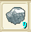

| 採掘 |
専門職：坑夫 |
| 名称 | 画像 | 延べ棒 | 場所 | ||
| 台湾名表示 | |||||
| 採掘Lv1 | |||||
| 銅 | |
|
国営第24坑道1Fならどこでも採取可能 | ||
| 銅 | |||||
| 採掘Lv2 | |||||
| 鉄 | ハーバル東洞窟2F、ウィルノア洞窟1F | ||||
| 鐵 | |||||
| 採掘Lv3 | |||||
| 銀 | ハーバル東洞窟2F、ウィルノア洞窟2F | ||||
| 銀 | |||||
| 採掘Lv4 | |||||
| 純銀 |  | ウィルノア洞窟1F | |||
| 純銀 | |||||
| 採掘Lv5 | |||||
| 金 | ウィルノア洞窟1F(49.6)付近 | ||||
| 金 | |||||
| チタン | ウィルノア海底洞窟2F(93.24)付近 | ||||
| 採掘Lv6 | |||||
| 白金 | ウィルノア洞窟1F | ||||
| 白金 | |||||
| 採掘Lv7 | |||||
| ミスリル鋼 | セレーネ海底洞窟2F(43.56)付近 | ||||
| 幻之鋼 | |||||
| 採掘Lv8 | |||||
| ミスリル銀 | 新海底２層目 | ||||
| 幻之銀 | |||||
| 永久氷石 | 青竜の洞窟地下2階 | ||||
| 永久冰石 | |||||
| ブルードラゴンの鱗 | 青龍の洞窟の最上階の青龍の巣(63.36) | ||||
| 藍龍之鱗 | |||||
| ダマスクス鋼 | 第1通路2階(45.23) | ||||
| 達馬斯礦 | |||||
| 採掘Lv9 | |||||
| レグネシウム | 混乱洞窟はいってすぐ下のあたり。 | ||||
| 勒格耐席姆 | |||||
| セルハット鉱 | 海峡トンネル(カンナベラ側)(25.38) | ||||
| 謝爾哈特礦 | |||||
| 採掘Lv10 | |||||
| オリハルコン | 混乱洞窟２層目。 | ||||
| 奧利哈鋼 | |||||